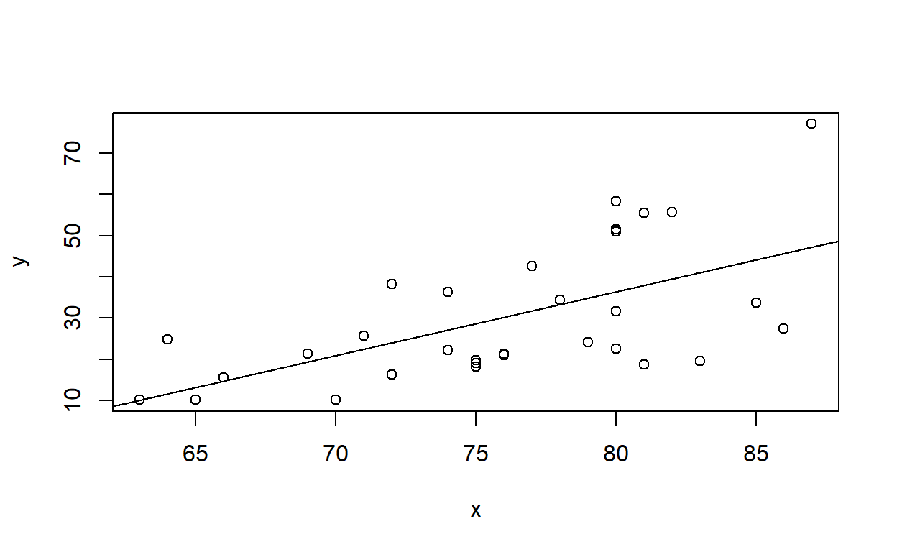

Lab 1 overview
In this course we use the R programming language for statistical computing and graphics (e.g., this lab is actually built in R using ‘Rmarkdown’ and Rshiny). The purpose of this laboratory exercise is to develop familiarity with programming in R.
Lab 1 details
This lab provides an introduction to the R programming Language and the use of R to perform statistical and programming tasks.
As with all lab reports, your answers will either take the form of R functions or short written responses. The R functions should be stored in an R script file (‘.R’ extension). To allow me to evaluate your work more efficiently, please name your R script using the following convention: “[your first name]_[your last name]_lab1.R”. So my submission would be “kevin_shoemaker_lab1.R” (all lower case).
Please include only the requested functions in your submitted R script. That is, the R script you turn in should only include the custom R functions you constructed to answer the questions, and none of the ancillary code you used to develop and test your functions. You will probably want to complete the lab exercises using a main script (that includes all your work, including code for testing your solutions), and then save a reduced copy (with only the requested functions) for submission. One useful way to accomplish this would be to work with two R script (.R extension) files: one for your functions (that you will turn in), and a main script for testing (that you will NOT turn in) that sources your functions and tests them. Ask your instructor if you’d like a demo of how this works!
Before submitting your code using our shared Nevada Box folder, please clear your environment and run the script you will submit (containing only the requested functions) from start to finish. Check the ‘Environment’ tab in RStudio after running your script, and make sure that the script ONLY defines functions within your global environment. Your script should generate no additional objects (e.g., data frames), it should not read in any files. Don’t put a ‘clear workspace’ line (e.g., ‘rm(list=ls()))’ anywhere in your submitted code- unless you want to make the instructors life difficult.
In addition to submitting your script, you will need to respond to additional questions using the Lab 1 “quiz” interface on WebCampus.
Please submit your R script (via NevadaBox) and complete the WebCampus quiz by midnight on the due date (one week after the final lab session allocated for this topic). You can work in groups but submit the materials individually.
This lab exercise will extend over two Tuesday laboratory periods with your R script and WebCampus quiz due on the date specified in WebCampus.
Let’s get started!
- Go to website http://cran.r-project.org/. This is the source for downloading the free, public-domain R software and where you can access R packages, find help, access the user community, etc. If you haven’t already installed R, do so now!
- Open the Rstudio software (https://www.rstudio.com– and install if you haven’t done so already. Change the working directory to a convenient directory (e.g., a subfolder called ‘Lab 1’ in your main course directory). NOTE- if you set up an Rstudio “project” (.Rproj extension) in this directory, the working directory is set automatically each time you load the project! I recommend you set up an R studio project for this course.
- Open a new, blank R script window in Rstudio. Using comments (anything preceded by a hash mark is not interpreted by R and can be used to provide human-readable notes and commentary so your code is more readable), add a header to the script to indicate that this is lab 1- include your name and the course number in the header.
- Save the script to your working directory, using the naming
convention: “[your first name]_[your last name]_lab1.R”, all lower-case.
So my script would be named: “kevin_shoemaker_lab1.R”. You will be
submitting this script via NevadaBox when you have finished all the
exercises. Again, please include only the requested functions in your
submitted R script.
- While you’re at it, I recommend starting a new Word document to record your written responses to the lab exercises. When you’re ready, you can copy and paste your responses from Word into WebCampus.
Take some time to get more familiar with R (optional)
From the R manual, ‘Introduction to R’ you can implement all the steps in Appendix A, located here. This takes you far but without much explanation– it is a way to jump into the deep end of the pool. Alternatively, or in addition, go to the Links page and pick a tutorial to run through (e.g., the Datacamp introductory R course, which uses the ‘tidyverse’ packages). You can also check out the materials from my R “bootcamp” archive.
Before you move on, make sure you have a basic understanding of how to work with R and RStudio. If you are working with someone who has used R before, don’t be afraid to ask questions! Also, take your time with this- you might want to use the entire lab period on this if you have never used R before - it will be time well spent!
Another useful introductory R tutorial can be found here,
courtesy of NCEAS. If you
haven’t used R before, consider working through this tutorial before
going through the lab exercises.
If you already have basic R expertise, you can move ahead!
As you work your way through the tutorial(s) (on your own pace), please ask the instructor or your peers if you are uncertain about anything.
Interactive lab exercises!
Since there is no TA in this class, I have tried wherever possible to embed interactive text windows (which serve as a ‘virtual TA’ and were created using ‘R shiny’) in the course website where you can test your code and get instant feedback as to whether your answers are correct!
Here’s an example:
Write a function that takes a numeric input vector and computes the sum of all its elements.
Basically, all you need to do here is write ‘sum(x)’ where it says ‘[add code here]’
NOTE: you don’t need to submit this as part of your lab report! This is just practice…
myfunc <- function(x){
# [add code here!]
}Hint: You may want to use the sum()
function.
Demonstration: Central Limit Theorem (CLT)
To gain some familiarity with using R scripts and developing algorithms, complete the following exercise (you don’t need to submit this demo as part of your lab write-up BUT you will be asked to use this code as part of exercise 1 (below).
Remember that you may want to have two scripts for this and other labs. The first script contains all the code you build to learn new concepts, develop and test code for answering the questions, etc. The second script is the one you will submit, and only contains the functions you defined as part of each lab. I recommend either (1) putting the second script (for submission) together after you finish the lab (just before submitting)- basically copying your main script and deleting everything but the functions- OR (2) developing your code as 2 scripts from the beginning: a script with all the functions for turning in, along with a testing script that sources and then tests these functions.
Complete the following steps:
Review the meaning of the Central Limit Theorem, which states that the sum (or mean) of a sufficiently large number of independent and identically distributed random variables will form another random variable that is asymptotically normally distributed (as the number of elements added together approaches infinity), regardless of the distribution of the underlying data. One of the key implications is that the sample mean (sum of iid random variables divided by the sample size) will be normally distributed with mean equal to the mean of the data distribution and variance equal to the variance of the data distribution divided by the sample size:
\[X \sim any \;distribution(mean=\mu, var=\sigma^2)\] \[ \bar{X}= \frac{1}{N}\sum_{i=1}^N X_i\] \[\bar{X} \xrightarrow{D} Normal(\mu,\frac{\sigma}{\sqrt{N}})\]
Type (or paste) the following code into your R script window (or RStudio script window):
# CENTRAL LIMIT THEOREM demonstration ------------------------
N <- 10 # sample size
lots <- 1000 # placeholder representing infinity
## Define the random number distribution. ------------------
my_random_variable <- function(n){ runif(n,10,20)} # Here, we will modify the "uniform" random number generator to have a min of 10 and max of 20. You could just use 'runif()' or any other distribution for that matter
many_samples = replicate(lots,my_random_variable(N)) # do it many times!
many_xbars = colMeans(many_samples)
hist(my_random_variable(lots),freq=F,ylim=c(0,1),main="",xlab="Value") # plot out the distribution of sample means
hist(many_xbars,freq=F,add=T,col="red") # overlay the distribution of the underlying data from which we are drawing samples.
legend("topleft",fill=c("gray","red"),legend=c("data population","sample means"),bty="n") # add a legend to the plot
- Experiment with executing this code in the following four ways:
- copy and paste from the script window directly into the R
console;
- use
to execute line by line from within the script window in RStudio; (or on Macs, use command enter)
- use
to select the whole code block, then to execute all at once;
- save the script to your working directory as a text file with .R extension, and then run the script using the “source()” function, e.g.:
- copy and paste from the script window directly into the R
console;
source("CentralLimitTheorem.R") # load the R script!
NOTE: The hash (#) used above allows you to insert comments adjacent to snippets of code, which facilitates readability of code (and lets the programmer remember later on what he/she was thinking when coding things a certain way!). It is good practice to comment every line of code so as to describe what it does in plain English, including all variables and functions. Make sure you fully understand the commented code for the CLT demonstration above!
Here is an interactive window you can use to play around with the CLT code (or even better, just open an RStudio instance and explore the code there!):
# [Add code here] Hint: Try running with different values for the ‘N’ parameter.
- Now modify your R script to see how closely the distribution of sample means follows a normal distribution. Use a “quantile-quantile” (q-q) plot to visualize how closely the quantiles of the sampling distribution resemble the quantiles of a normal distribution. Use the “qqnorm()” function. To learn more about this function, type:
?qqnorm # learn more about the "qqnorm()" functionPlot the q-q plot next to the histograms. The plot on the left should be the comparison of histograms (for population distribution and distribution of sample means) shown in the original script (above). The plot on the right should be the q-q plot. To produce side-by-side plots, you will need to add this line of code to the appropriate place in your script:
# Set graphical parameters for side by side plotting -------------
par(mfrow=c(1,2)) # sets up two side by side plots as one row and two columns
## or alternatively...
layout(matrix(1:2,nrow=1))In addition, run a Shapiro-Wilk normality test, which tests the null hypothesis that a set of numbers (in this case the vector of sample means) indeed comes from a normal distribution (so what does a low p-value mean??). Use the “shapiro.test()” function:
?shapiro.testAgain, here is an interactive window you can use to play around with the CLT code (or just use another instance of RStudio).
# [Add code here] Hint: Try running with different values for the ‘N’ parameter.
So… what can you conclude from these tests??
Exercise 1: home-made functions!
Finally we have arrived at the ACTUAL lab exercises. Remember you don’t need to submit any of the work up to this point.
For the first part of this lab, you are asked to write several functions (and submit them as part of your lab script, of course!). The functions increase quickly in complexity!
You should now know how to construct functions in R. If you don’t, go back to the NCEAS tutorial and review the section on writing functions.
Exercise 1a (for R script)
Write an R function called “CoefVar()” that takes a numeric vector (named ‘x’ within the function but could have any name outside the function) as input, and computes (and returns) its coefficient of variation (CV; standard deviation as a proportion of the mean). To make sure it works, apply your function to the ‘Height’ vector in the ‘trees’ dataset that installs with R as sample data:
You can test your function in the ‘sandbox’ below. Before you check your answer, make sure you delete or comment out all code except for the function itself.
CoefVar <- function(x){
# [add code here!]
}Hint: You probably want to use the ‘sd()’ and ‘mean()’ functions.
You can use the following code to test your function using the built-in ‘trees’ dataset.
# Testing your code ------------------------
# Explore the "trees" dataset
#?trees
summary(trees) # learn more about the data## Girth Height Volume
## Min. : 8.30 Min. :63 Min. :10.20
## 1st Qu.:11.05 1st Qu.:72 1st Qu.:19.40
## Median :12.90 Median :76 Median :24.20
## Mean :13.25 Mean :76 Mean :30.17
## 3rd Qu.:15.25 3rd Qu.:80 3rd Qu.:37.30
## Max. :20.60 Max. :87 Max. :77.00trees$Height # extract the "Height" column from the trees dataset.## [1] 70 65 63 72 81 83 66 75 80 75 79 76 76 69 75 74 85 86 71 64 78 80 74 72 77
## [26] 81 82 80 80 80 87CoefVar(trees$Height) # run your new function!## [1] 0.08383964* Exercise 1b (for R script)
Write a function called “DrawLine()” for drawing a regression line through a scatter plot. This function should be specified as follows:
- input:
- x = a numeric vector specifying the x-coordinates of the scatter
plot
- y = a numeric vector specifying the y-coordinates of the scatter plot
- x = a numeric vector specifying the x-coordinates of the scatter
plot
- suggested algorithm (base R):
- with the x and y coordinates, first produce a scatterplot (HINT: use the “plot()” function)
- use the “lm()” function to regress the y variable on the x variable.
- record the intercept and slope of the linear relationship between x and y (HINT: use the “coef()” function)
- add a regression line to the scatter plot (HINT: use the “abline()” function)
- suggested algorithm (ggplot):
- use the “lm()” function to regress the y variable on the x variable, and store the coefs
- make a data frame containting the x and y coordinates
- use ggplot to produce a scatterplot (HINT: use geom_point)
- add a regression line to the scatter plot (HINT: use the “geom_smooth” function with method “lm”)
- NOTE: you need to use the ‘print’ function to make sure your plot shows up (e.g., ‘print(myplot)’)
- return:
- coefs = a vector of length 2, storing the intercept and slope of the linear relationship (in that order)
You can use this “sandbox” (below) to develop and test your function! Again, remember to comment out everything except for your “DrawLine” function definition prior to submitting (you can test the function using the “run” button).
DrawLine <- function(x,y){
# [add code here!]
}
#DrawLine(trees$Height,trees$Volume)Hint: You may want to use the coef()
function.
As a test, apply this function to the ‘Height’ (x axis) and ‘Volume’ (yaxis) vectors in the ‘trees’ dataset, and then to the ‘waiting’ (x axis) and ‘eruptions’ (y axis) vectors in the ‘faithful’ dataset.
#DrawLine(trees$Height,trees$Volume)
# ?faithful
# summary(faithful)
DrawLine(faithful$waiting,faithful$eruptions) # test your function using the old faithful eruptions data## `geom_smooth()` using formula = 'y ~ x'
## (Intercept) x
## -1.87401599 0.07562795* Exercise 1c (for R script)
Write a function called “DrawLine2()” for drawing a “smoothed” regression line through a scatter plot, making the smoothing span (degree of smoothness, or non-wiggliness of the line) a user-defined option. This function should be specified as follows:
- input:
- x = a numeric vector specifying the x-coordinates of the scatter
plot
- y = a numeric vector specifying the y-coordinates of the scatter plot
- smooth = a logical (TRUE/FALSE) value defining whether or not to add a smoothed line or a linear regression line
- span = a number indicating the degree of smoothness, or “un-wiggliness” of the smoothed line (only applies if smooth=TRUE)
- x = a numeric vector specifying the x-coordinates of the scatter
plot
- suggested algorithm:
- with the x and y coordinates, first produce a scatterplot (HINT: use the “plot()” function)
- if smooth is FALSE, then proceed to draw a straight line as before (and return the coefficients)
- if smooth is TRUE, plot a smoothed, locally-weighted regression of the y variable on the x variable (e.g., using the “scatter.smooth()” function). Make sure you use the “span” argument!
- if smooth is TRUE, use the “loess()” function to record the same smoothed, locally-weighted regression of the y variable on the x variable. Again, make sure you use the “span” argument!
- return:
- out = (if smooth=TRUE) the loess model (the output produced by running “loess()” (or the slope and intercept from the linear regression, if smooth=FALSE)
You can use the interactive window below to develop and test your function!
xvec <- c(1:10)
yvec <- rnorm(length(xvec),c(2:6,7:3),2) # you can use these vectors for testing the function
DrawLine2 <- function(x,y,smooth=F,span=1){ # note the default values (the ones set using equal sign)
# [add code here!]
}
# DrawLine2(faithful$waiting,faithful$eruptions,smooth=T,span=.5) # test using the old faithful eruptions dataHint: You may want to use the
scatter.smooth() function to draw the curve and the
‘loess()’ function to build the model.
Try testing your function using the trees and faithful datasets!
xvec <- c(1:10)
yvec <- rnorm(length(xvec),c(2:6,7:3),2)
DrawLine2(xvec,yvec,smooth=T,span=0.5) # run your new function!
## Call:
## loess(formula = y ~ x, span = span)
##
## Number of Observations: 10
## Equivalent Number of Parameters: 8.49
## Residual Standard Error: 4.169DrawLine2(x=trees$Height,y=trees$Volume,smooth=F)
## (Intercept) x
## -87.12361 1.54335DrawLine2(faithful$waiting,faithful$eruptions,smooth=T,span=.5) # test using the old faithful eruptions data## Call:
## loess(formula = y ~ x, span = span)
##
## Number of Observations: 272
## Equivalent Number of Parameters: 6.71
## Residual Standard Error: 0.3731DrawLine2(faithful$waiting,faithful$eruptions,smooth=T,span=.9)
## Call:
## loess(formula = y ~ x, span = span)
##
## Number of Observations: 272
## Equivalent Number of Parameters: 3.88
## Residual Standard Error: 0.3991Exercise 1d (for R script)
Write a function called “CLTdemo()” based on the central limit theorem (CLT) demonstration code above. This function should be specified as follows:
- input:
- n.samples = number of independent random samples to draw from the
specified distribution (default = 1000)
- sample.size = sample size (length of each independent random sample) (default = 10)
- min = lower bound of the uniform distribution to draw from (default=10)
- max = upper bound of the uniform distribution (default=20)
- n.samples = number of independent random samples to draw from the
specified distribution (default = 1000)
- suggested algorithm:
- see CLT demonstration above!
- generate side-by-side plots of the histogram of sample means (left) and a quantile-quantile plot to test for normality.
- return:
- out = the Shapiro-Wilks normality test results (the output produced by running “shapiro.test()”)
You can use this interactive window (below) to develop and test your function! As always, remember to comment out everything except for the requested function prior to submitting.
CLTdemo <- function(n.samples=1000,sample.size=10,min=10,max=20){
# [add code here!]
}
# CLTdemo(n.samples=5000,sample.size=4,min=10,max=20)Hint: Use the CLT Demo code from earlier in Lab 1!
And you can test your code with the following command:
answer1d <- CLTdemo(n.samples=5000,sample.size=4,min=10,max=20) # run your new function!
Exercise 1e (answer in WebCampus!)
Finally, test the CLT function out for different parameter combinations to make sure it works! See if you can use this function to develop a reasonable rule for how large a sample size is necessary to ensure that the sample mean is normally distributed given that the underlying data population is a uniform distribution. Please submit your answer in WebCampus- and please justify your answer! [note: I am just looking for a thoughtful response, not a definitive mathematical treatise! Just a few sentences is fine.]
You can use the following interactive R window for testing if that is helpful:
# use this space if it's helpfulAside: default values in functions
NOTE: to set default values, just use the equals sign when specifying your function. For example, say I wanted to write a function that adds numbers in a vector. It might look something like this:
newsum <- function(x=c(1,2,4)){
sm <- sum(x)
return(sm)
}
newsum(x=c(5:10)) # specify x manually## [1] 45newsum() # use default value!## [1] 7Try setting some alternative default values and re-running the function with and without arguments until you are sure you understand how default values work!
Multiple Regression 1: Air Quality Data
The following is a refresher on performing multiple regression analyses in R:
- Type the following for a list of sample datasets that come with the core R package (some of these you have already encountered).
library(help = "datasets") # list of sample datasets that come with R
?airqualityExamine the ‘airquality’ dataset (use the ‘head’ and ‘summary’ functions). Note that there are missing values where ozone concentration data and solar radiation data were not collected.
We could ignore the missing values and just go ahead with our regression analysis, since the default response of the “lm()” (‘linear model’) function is to omit cases with missing values in any of the specified parameters. However, to avoid problems later, we will omit them explicitly by constructing a new, ‘cleaned’ dataset as follows:
air.cleaned <- na.omit(airquality) # remove rows with missing dataConduct a multiple linear regression of ozone concentration as a function of solar radiation, wind and temperature. Use the ‘lm()’ function to conduct an ordinary least squares (OLS) regression analysis.
Explore the regression outputs using the ‘summary’ function, and explore regression diagnostics:
par(mfrow=c(3,2))
plot(model1, which=c(1:4)) # diagnostic plots (NOTE: the 'plot()' function returns these plots by default when the input is a linear regression model)
hist(residuals(model1), breaks=10) # histogram of residuals
plot(predict(model1) ~ air.cleaned$Ozone) # plot predicted vs observed- should follow 1:1 line. Examine this for model biases.
abline(0,1)
NOTE: see this website for more information on the diagnostic plots produced by lm().
Here is a practice R window in case it is helpful:
# practice space for regression analysis!- Consider the possibility that there may be an important interaction effect between solar radiation and temperature on influencing ozone concentrations. Explore that with a simple scatter plot where symbol size is scaled to ozone concentration:
symbols(air.cleaned$Temp, air.cleaned$Solar.R, circles=air.cleaned$Ozone/100, ylab="Solar Radiation", xlab="Temperature", main="Interaction Plot", inches=FALSE)
# alternatively...
coplot(air.cleaned$Ozone~air.cleaned$Temp|air.cleaned$Solar.R,rows=1) # the "|" operator can be read "conditional on"
# alternatively, you can use ggplot
library(ggplot2)
ggplot(air.cleaned,aes(Temp,Solar.R)) +
geom_point(aes(size=Ozone))
- Now fit a second model that includes the interaction between solar radiation and temperature. Use the following formula to fit the interaction:
formula2 <- "Ozone ~ Wind + Solar.R * Temp" # you can name formulas...Explore regression outputs for the second model in the same way as you did for the first model without the interaction term.
Conduct an ‘F Test’ (or a Likelihood Ratio Test, LRT, if you prefer…) to formally test whether the more complex model (including the interaction term) fits the data significantly better than the reduced model (with fewer parameters) that lacks the interaction term. Recall that the \(R^2\) value is inadequate for this purpose because \(R^2\) will always increase with additional parameters! Use the following syntax,
anova(model1, model2, test="F")
anova(model1, model2, test="LRT") # how would you run an LRT test instead?You can use the interactive window below to play around with multiple regression in R! You don’t need to include any of this code in your submission.
# your code hereExercise 2: regression in R (written responses in WebCampus)
Very briefly (but in complete sentences) answer the following questions in WebCampus:
Exercise 2a By how much (and in what direction) is ozone concentration expected to change if temperature increased from 26 to 30 degrees Celsius? Assume that solar radiation stays constant at 200 lang and wind speed stays constant at 9 mph. Be careful with the units for temperature! Make sure to use the ‘interaction’ model (model2) from part 7 above to answer this question. Please briefly explain (in WebCampus) how you got your answer.
Exercise 2b What is the null hypothesis that the p-values for the individual regression coefficients are designed to test?
Multiple Regression 2: Noble fir data
For this exercise, we will use tree data from a forest in the western Oregon Cascades.
We will fit a multiple linear regression model that predicts stand-level tree biomass as a function of environmental variables (including a mix of continuous and categorical predictors) and stand age.
Obtain the TreeData.csv file from the “Data Sets” tab (or just download here)- save it to your working directory.
This describes a subset of forest inventory data from the Douglas-fir forests of western Oregon (n = 90, 0.1-ha sites).
Arranged in columns from left to right, variables are:
- Site: site identifier
- Biomass: tree biomass (for all species) in Mg/ha, the response
variable for Part 1 of the lab.
- ABPR: Presence/absence of Abies procera (noble fir) on a given site
(coded 1 for presence).
- StandAge: Maximum tree age in the 0.1-ha plot. This variable will be
used as a proxy for successional stage. We assume that stand-replacing
fires are the dominant form of disturbance and that stand age is a
reasonable proxy variable for time since the last fire.
- X, Y: geographic coordinates – UTM easting and northing,
respectively
- Elev: elevation (m)
- Northeastness: slope aspect that has been linearized using a cosine
transformation so that the aspect of 45 degrees has value 1 and aspect
of 225 degrees has value -1. In this study area, this variable is
expected to reflect a moisture gradient from moister (NE) to drier (SW)
aspects.
- Slope: slope steepness (degrees)
- SlopePos: slope position, a categorical variable (i.e. factor) with three values: Valley, Slope and Ridge.
This is a comma-delimited (.csv) file, which is a common file format for importing data into R. Import the data into R as a data frame (R’s version of an excel spreadsheet), using the following command:
NobleFir.df <- read.csv("TreeData.csv")Inspect the resulting data object. Summarize it using the ‘summary()’ and ‘plot()’ functions.
Obtain a correlation matrix for biomass and the four numeric predictor variables using the ‘cor()’ function and by subscripting column locations on the data frame (ask instructor for explanation of syntax if needed):
cor(NobleFir.df[,c(2,4,7:9)])Are any of the predictor variables highly correlated?
Calculate Box Plots for the continuous predictor variables (excluding x and y coordinates) according to sites with or without noble fir. Use the ‘boxplot()’ function. What clear relationships, if any, emerge for how sites with and without noble fir differ with regard to their environmental setting? For example:

Use multiple linear regression to model tree biomass as a function of predictor variables (excluding spatial coordinates), using the same approach for regression fitting and diagnostics as we did previously.
Re-run the regression to obtain standardized regression coefficients, allowing direct comparison of effect sizes for the continuous predictor variables (since all variables are then transformed to standard deviate units, i.e. mean centered on zero with standard deviation of one). The ‘scale’ function provides an easy way to implement this.
Biomass_std.lm <- with(NobleFir.df, # using the "with()" statement, we don't need to keep referencing the name of the data frame.
lm(scale(Biomass) ~ scale(elev) + scale(Northeastness) + scale(Slope) + SlopePos + scale(StandAge))
)Visually assess whether regression errors (residuals) are spatially autocorrelated using the ‘symbols’ function:
with(NobleFir.df,
symbols(x,y,circles=abs(residuals(Biomass_std.lm)), inches=0.3, ylab="Northing", xlab="Easting", main="Errors from Biomass Regression Model")
)
Note the ‘with’ function above- this function essentially makes all columns in a data frame part of the global environment- that is, the commands you enclose in a ‘with’ function can refer to the columns in the data frame as if they were part of the global environment. This is a safe way to replicate the ‘attach’ function in R (which I recommend you never use!).
You can use this “sandbox” (below) to play around with this example in R!
# your code hereExercise 3: noble fir regression
Answer the following questions (with brief justification) in WebCampus:
- Exercise 3a Can forest biomass be reliably
predicted by topographic variables and stand age? Explain your
reasoning.
- Exercise 3b Is there spatial variation in model
goodness of fit (i.e., on the residual error)? Use your visual
assessment of regression errors (residuals) across space to answer this
question. Explain your reasoning.
- Exercise 3c Which of the environmental influences you included in your model are most important in predicting forest biomass? Explain your reasoning.
Exercise 4: Algorithmic (brute force) z-test
Review the “brute-force z-test” code from the “Why focus on algorithms” lecture. Then complete the following exercises:
Exercise 4a
What if we wanted to run a two-tailed z-test? That is, what
if our alternative hypothesis were that salmon fed on the new vegetarian
diet could plausibly be larger or smaller than those fed on the
conventional diet after one year? Modify the function
(“z.test.algorithm()”) with a new argument that allows for both one and
two-tailed tests! Name your new function “z.test.q4a()”.
To convince yourself that your new function works, try running your
function for a (made-up) case where the observed body mass for those fed
on the new diet are generally higher than the expected body mass for
those fed on the conventional diet after one year – the opposite of your
(alternative) hypothesis!
NOTE: you may get tangled up with the null hypothesis/p-value concept, which is admittedly a difficult concept! A p-value always assumes the null hypothesis is true (given the null hypothesis is true, a p-value gives the probability of obtaining a test statistic as or more extreme than the observed test statistic). The alternative hypothesis for the 1-tailed test is that the population mean for the treatment group is less than the population mean for conventional farm-raised salmon. The alternative hypothesis for the 2-tailed test is that the absolute value of the population mean for the treatment group is greater than the population mean for conventional farm-raised salmon. The null hypothesis, as always, is that there is no difference.
Include your function in your submitted r script!
This function should be specified as follows:
- input:
- sample = a vector of observed sample values
- pop.mean = a scalar value representing the expected mean value under
the null hypothesis
- pop.sd = a scalar value representing the population standard
deviation under the null hypothesis
- onetail = a logical TRUE or FALSE to indicate whether or not to perform a one-tailed test or a two-tailed test
- suggested algorithm:
- See lecture for example ‘z-test()’ function
- To implement the two-tailed test, you need to define what ‘extreme’
means in both directions. You might first define the absolute difference
between the population mean and the sample mean. Then define ‘more
extreme’ as any simulated sample mean that falls further away from the
population mean in either direction (larger or smaller than the
population mean) than the observed sample mean.
- Use an “if-else” statement to accommodate both a one-tailed and a two-tailed test.
- return:
- to_return = a list with three elements: “null_dist”, representing
the sampling distribution for sample means under the null
hypothesis,
“p_value”, representing the p-value, and
“observed_mean”, representing the mean of the observed sample.
- to_return = a list with three elements: “null_dist”, representing
the sampling distribution for sample means under the null
hypothesis,
You can use the interactive window below to develop and test your function!
population.mean = 4.5
population.sd = 0.9
my.sample = c(3.14,3.27,2.56,3.77,3.34,4.32,3.84,2.19,5.24,3.09)
# ztest <- z.test.algorithm(sample = my.sample, pop.mean=population.mean, pop.sd=population.sd ) # use function from class..
z.test.q4a <- function(sample, pop.mean, pop.sd, onetail=T){
# [add code here!]
}
#z.test.q4a(sample = my.sample, pop.mean=population.mean, pop.sd=population.sd,onetail=F ) # test your functionHint: No hints … yet!
Test your function using some alternative sample data values. For example:
population.mean = 4.5
population.sd = 0.9
my.sample = c(5.14,3.27,4.56,3.77,3.34,4.32,3.84,3.19,5.24,4.09)
z.test.q4a(sample = my.sample, pop.mean=population.mean, pop.sd=population.sd,onetail=F )## $null_dist
## [1] 4.591938 4.414425 4.770638 4.717012 4.415847 4.342600 3.761486 4.493856
## [9] 4.281865 4.635162 4.410666 4.200751 4.170009 4.634937 4.168121 4.138423
## [17] 4.843563 4.010592 4.416154 4.396054 4.368858 4.129189 4.711626 4.693461
## [25] 4.647945 4.349491 4.236331 4.482907 4.435086 4.139948 4.182114 4.891346
## [33] 4.560448 4.318376 4.081747 4.650261 3.955322 4.266897 4.410298 4.662493
## [41] 4.592235 4.800416 4.023645 4.999771 4.431430 4.479960 4.279427 4.633416
## [49] 4.287605 4.201560 3.879660 4.566302 4.267269 4.246200 4.529099 4.736306
## [57] 4.320933 4.621503 4.240018 4.604982 4.517016 4.590204 4.377679 4.112875
## [65] 4.093967 4.797728 5.061491 4.376636 4.631198 3.953353 4.241573 4.679551
## [73] 4.996847 4.774468 4.557986 4.423863 5.185932 4.470351 4.198404 4.390295
## [81] 4.901086 4.644498 4.035686 4.202071 4.693892 4.211153 4.527511 4.206105
## [89] 4.329425 4.172638 4.353774 4.304703 4.792997 4.173243 4.588565 4.310146
## [97] 4.153640 4.577436 4.121549 4.710613 4.434366 5.007735 4.302508 4.455796
## [105] 4.866870 4.814528 4.333116 4.640866 4.180088 4.573873 4.901723 4.279155
## [113] 3.920682 4.319022 4.050890 4.438996 4.301677 4.236266 4.173295 4.224480
## [121] 4.183230 4.458628 4.442656 4.405579 4.456369 4.419585 4.244453 4.381152
## [129] 4.693080 4.261729 4.242655 4.876128 4.617913 4.504633 4.511101 4.702838
## [137] 4.646330 4.729367 4.451284 4.154289 4.139921 4.454517 4.850385 4.440636
## [145] 4.396279 4.647859 5.136518 4.134709 4.474128 4.474580 4.712830 4.395228
## [153] 4.497173 4.014619 3.785262 4.057605 4.597847 4.641456 4.688571 4.233890
## [161] 4.712924 4.860637 4.953569 4.629574 3.990672 4.683522 4.379727 4.343903
## [169] 4.666358 4.716182 4.279422 4.552513 4.909014 4.720970 4.286577 4.637562
## [177] 4.691545 4.483402 4.318240 4.229293 4.786105 4.577219 4.654185 4.873522
## [185] 4.453939 4.219140 4.527987 4.343248 4.863772 4.722942 4.525326 4.538119
## [193] 4.350234 4.259140 4.391399 4.159103 4.251273 4.155284 4.819665 4.384179
## [201] 4.152499 4.793333 4.783294 4.511692 4.838021 4.546762 4.143922 4.585441
## [209] 4.219623 4.978132 4.771516 4.195559 4.440225 4.462360 4.602865 4.360180
## [217] 3.972266 4.299008 3.884706 4.401065 4.554491 4.708478 4.064883 4.752710
## [225] 5.114614 4.443865 4.705352 4.435283 4.848600 4.355843 4.318077 4.290540
## [233] 4.843673 4.745664 4.890198 4.933654 4.659086 4.256808 4.782832 4.965835
## [241] 4.704478 4.841846 4.677271 4.552745 4.524526 4.749382 4.586302 3.981615
## [249] 4.756613 4.548497 4.854043 4.884878 4.434057 4.424905 4.510719 4.753600
## [257] 4.601004 4.192236 4.395598 4.527023 4.464539 4.319542 4.666512 4.938672
## [265] 4.437716 4.708836 4.566381 4.160746 4.213628 4.353698 4.085704 4.598800
## [273] 4.273720 4.505744 4.023154 4.822939 4.627402 4.650678 3.887443 4.607818
## [281] 4.042109 4.643826 4.779430 4.098203 4.371300 4.743133 4.621217 4.966574
## [289] 4.511849 4.738014 4.157874 4.389044 4.554056 4.583278 4.157895 4.322301
## [297] 4.351873 4.744114 4.757837 4.446999 4.649273 4.725055 4.052651 4.929019
## [305] 4.121151 4.685063 4.438877 4.509845 4.670731 4.209269 4.449428 4.377947
## [313] 4.456289 4.595952 4.583147 5.000213 4.424410 4.283558 4.278869 4.306087
## [321] 4.431043 4.374510 4.364609 4.353877 4.561594 4.031776 4.103438 4.647080
## [329] 4.028283 4.562352 4.888686 4.498994 4.323408 3.890926 4.333032 4.197693
## [337] 5.240709 4.609839 4.212374 4.731720 3.887504 4.180979 4.606301 4.355059
## [345] 4.514533 4.393076 4.308470 3.918684 4.660778 4.845467 3.993432 4.311181
## [353] 4.079107 4.679007 4.537942 4.508338 4.511338 4.664365 4.631806 4.474497
## [361] 4.662456 4.323109 4.325880 3.777671 4.141621 3.907833 4.765075 4.780441
## [369] 4.502680 4.316157 4.494752 4.141390 4.612994 4.455536 4.418907 4.844686
## [377] 4.637270 4.809635 4.618940 4.726714 4.199068 4.336749 4.536160 4.385371
## [385] 4.125018 4.172025 4.503638 4.530307 4.126578 4.828562 4.528262 4.120220
## [393] 5.010401 4.273301 4.552512 4.636581 4.313431 4.227537 4.466757 4.996199
## [401] 4.348088 4.357367 4.398927 4.680352 4.877539 3.798857 3.899354 4.399689
## [409] 4.462110 4.464975 4.570603 4.178982 4.267985 4.356224 5.119113 5.102796
## [417] 4.381956 4.744961 4.402844 4.416935 5.152891 4.259878 4.147766 4.742805
## [425] 4.121576 4.491452 4.279646 4.800104 4.446829 4.528193 5.149181 4.726269
## [433] 4.872370 4.739540 4.019229 4.462781 4.539736 4.615035 4.837985 4.838346
## [441] 4.428585 4.342220 4.815315 4.482028 4.629560 4.682513 4.742280 4.272466
## [449] 4.562957 5.158921 4.374669 4.762349 4.181090 4.982533 4.417569 4.385784
## [457] 4.816460 4.678785 4.562071 4.404215 4.420339 4.341645 4.277270 5.046854
## [465] 4.509743 4.613468 4.534299 4.626382 3.954389 3.904957 4.692817 4.571796
## [473] 4.399794 4.572885 4.804336 4.602206 4.472724 4.497160 4.260402 3.923713
## [481] 4.375903 4.424473 4.252507 4.895555 4.577841 4.450774 4.884392 4.591086
## [489] 4.359718 4.910185 4.143506 4.572305 4.624802 4.558560 4.464939 4.356674
## [497] 4.636181 4.674215 4.903895 4.330512 4.324495 4.362142 4.848788 4.226729
## [505] 4.465700 4.469972 3.970207 4.424918 4.838647 4.780493 4.339967 3.925818
## [513] 4.485055 4.432027 3.893275 4.286885 4.244728 4.647908 4.970055 4.465539
## [521] 4.500966 4.151787 4.319522 4.062555 4.224119 4.730630 4.266725 4.596167
## [529] 4.226576 4.501873 4.024211 4.282345 4.488780 4.339685 4.662576 5.065544
## [537] 3.836497 4.313724 4.975595 4.502241 4.232958 4.524540 4.396413 4.074657
## [545] 4.766602 4.609007 4.108507 4.573436 4.535024 4.455548 4.594422 4.514621
## [553] 4.293676 4.438631 4.541812 4.111724 4.390105 3.580447 4.647281 4.720585
## [561] 4.739613 4.479806 3.779459 4.344371 4.566494 4.694171 4.951024 4.550589
## [569] 4.734047 4.165205 4.496433 4.750442 4.460089 4.911384 4.386018 4.197525
## [577] 4.444902 4.593662 4.212372 4.496005 4.491591 4.715841 4.549481 4.767368
## [585] 4.524368 4.540940 4.581982 4.119484 4.741529 4.564541 4.438204 4.324126
## [593] 4.564728 4.218982 4.508967 4.673396 5.189411 4.477852 4.061426 4.735654
## [601] 4.042490 4.660739 4.408380 4.457480 4.394285 4.495853 4.396920 4.546056
## [609] 4.613662 4.699771 4.589460 5.067048 4.234376 3.785196 4.526449 3.996499
## [617] 4.777734 4.831508 4.320888 4.570722 4.238074 4.443511 4.262893 4.744682
## [625] 4.609932 4.037960 4.781663 4.154360 4.710364 4.310752 3.803179 4.458215
## [633] 4.524355 4.624425 4.423870 4.384520 4.674449 4.140298 4.415443 4.554818
## [641] 4.382985 4.116290 4.590645 4.015670 4.522517 4.852752 4.079339 4.498577
## [649] 4.505874 4.535433 4.820426 4.442954 4.710911 4.296466 4.828677 4.353220
## [657] 4.062452 4.303532 4.572694 4.237951 4.161618 4.300555 4.506733 4.325972
## [665] 4.590092 4.462031 4.452543 4.667631 4.626845 4.623760 4.741978 4.509667
## [673] 4.552465 4.997567 4.509328 4.162224 4.371193 4.665699 4.268596 4.766309
## [681] 4.425768 4.263819 4.868777 4.563671 4.473284 4.539971 4.434114 5.019282
## [689] 4.526350 4.575420 4.518047 4.690273 4.477379 4.461601 5.631777 4.692023
## [697] 4.750955 4.579196 4.670063 4.463355 4.170540 4.666257 4.790757 4.551732
## [705] 4.592022 4.486764 4.866686 4.281251 4.646145 4.282436 4.192632 4.065180
## [713] 4.658004 5.099983 4.046379 4.349360 4.607771 4.141661 4.611465 4.202192
## [721] 4.227941 4.312877 4.356351 4.062397 4.663499 4.211613 4.707353 4.395504
## [729] 5.052585 3.994801 4.019110 4.747768 4.556940 4.413019 4.412970 5.044694
## [737] 4.938628 4.740614 3.981685 4.520879 4.529440 4.064417 4.443629 4.412444
## [745] 4.368559 4.184129 4.120752 4.358371 4.113791 4.381928 4.751680 4.683005
## [753] 3.839191 4.489914 4.272906 4.727419 4.507855 4.600460 4.486246 4.475527
## [761] 5.020436 4.444140 4.630262 4.733462 4.832596 4.410363 4.222264 4.299517
## [769] 3.837190 4.308809 4.633470 3.946894 4.521015 4.030096 4.543501 4.075489
## [777] 4.482253 3.905964 4.064126 4.000223 4.377415 4.095512 4.732041 3.956802
## [785] 4.053452 4.929320 4.506743 4.472033 4.752221 4.499217 4.172002 4.284161
## [793] 4.482851 4.499514 4.506466 4.717506 4.721160 3.844743 4.056725 4.220815
## [801] 4.377184 4.335614 4.343308 4.279116 4.886881 4.695583 4.452575 4.770711
## [809] 4.716137 4.602777 5.006684 4.736885 4.798696 4.421679 4.590265 4.013227
## [817] 4.779417 4.548563 3.951614 4.342202 4.717810 4.441175 4.394836 4.925116
## [825] 4.677374 4.485536 4.345982 4.586889 4.620512 4.153661 4.922283 4.061943
## [833] 4.558122 4.637854 4.428087 4.526908 4.087286 4.300826 4.637609 4.248892
## [841] 4.763746 4.436563 4.285205 4.274991 3.935210 4.537078 4.287248 4.886976
## [849] 4.561280 4.417959 4.952401 4.700949 4.829294 4.386307 4.156069 4.506974
## [857] 4.142367 4.129897 4.743227 4.582934 4.410191 4.131530 4.545102 4.441159
## [865] 4.737191 4.140462 4.882095 3.839700 3.960264 5.010250 4.930880 4.216566
## [873] 4.133421 4.800107 4.303163 4.507459 4.542362 4.308905 4.348629 4.342682
## [881] 4.252358 4.292175 4.595732 4.171063 4.085150 4.391874 4.117921 4.510409
## [889] 4.624824 4.103512 4.562617 4.564660 5.113272 4.255045 4.469942 4.312938
## [897] 4.268373 4.698660 4.556937 4.550824 4.453527 4.272410 4.275876 4.305208
## [905] 4.121060 4.158211 5.105671 4.104523 4.434711 4.788653 4.780969 4.635202
## [913] 4.529630 3.763836 4.150057 4.320197 4.253154 4.804407 3.828007 4.381620
## [921] 4.280020 4.905921 4.216511 4.509798 4.492833 4.927921 4.746421 4.367995
## [929] 4.772346 4.555431 4.582645 4.136318 4.531412 3.986253 4.720497 4.584323
## [937] 4.637798 4.749289 4.431429 4.583183 4.783308 4.439885 4.318783 4.167545
## [945] 4.201750 4.541970 4.380027 5.036377 4.642489 4.953101 4.552276 4.153724
## [953] 4.652943 4.599600 4.710066 4.734356 4.187365 4.765668 4.423336 4.928760
## [961] 4.745490 4.987811 4.536758 4.527968 4.471046 4.462373 4.254638 5.414841
## [969] 5.156923 4.896023 4.685960 4.289035 4.750873 4.782719 4.172758 4.914786
## [977] 3.893293 4.785239 4.207523 4.458859 4.349830 4.544422 4.413970 4.643547
## [985] 4.674795 4.686820 4.859178 4.953972 4.109303 4.263485 4.479466 4.699184
## [993] 4.755827 4.846862 4.444360 4.228795 4.586821 4.352243 4.459589 4.548045
##
## $p_value
## [1] 0.136
##
## $observed_mean
## [1] 4.076 # also try using the code from lecture to compare against a "real" z-test!population.mean = 4.5
population.sd = 0.9
my.sample = c(5.14,3.27,4.56,3.77,3.34,4.32,3.84,3.19,5.24,4.09)Exercise 4b
Now, what if we had access to a large set of samples under the null hypothesis AND that we would like to relax the assumption that the data follow a normal distribution under the null hypothesis?
In this exercise, you are asked to modify the brute-force z-test function so that you generate your sampling distribution by simply sampling from the known data set under the null hypothesis. To do this you can use the ‘sample’ function in R. For this purpose you should sample with replacement. Here is an example:
null.data=c(2.2,3.86,6.39,4.6,3.43,5.16,4.36,4.22,6.31,4.61,5.13,4.12,4.64,4.03,5.01,7.33,5.35,4.7,2.82,4.87,3.87,5.95,5.28,4.02,3.58,4.03,5.38,5.5,3.07,3.29,3.45,5.25,5.7,1.26,5.28,4.19,4.76,4.2,4.81,2.5)
sample(null.data,10,replace=T) # use the sample function to sample from a large vector with replacementFor this problem, let’s go back to the original null hypothesis: that salmon raised on the new diet will be smaller (lower mass) than those raised on conventional diet after one year.
Include your function in your submitted r script!
This function should be named ‘z.test.q4b’ and should be specified as follows:
- input:
- sample = a vector containing the observed sample
- null.data = a vector of observations under the null hypothesis
- suggested algorithm:
- Instead of sampling from a normal distribution to simulate samples under the null hypothesis, use the ‘sample’ function to sample directly from the null data distribution.
- return:
- to_return = a list with three elements: “null_dist”, representing the sampling distribution for sample means under the null hypothesis, “p_value”, representing the p-value, and “observed_mean”, representing the mean of the observed sample.
You can use this interactive window to develop and test your function!
null.data=c(2.2,3.86,6.39,4.6,3.43,5.16,4.36,4.22,6.31,4.61,5.13,4.12,4.64,4.03,5.01,7.33,5.35,4.7,2.82,4.87,3.87,5.95,5.28,4.02,3.58,4.03,5.38,5.5,3.07,3.29,3.45,5.25,5.7,1.26,5.28,4.19,4.76,4.2,4.81,2.5)
my.sample = c(3.14,3.27,2.56,3.77,3.34,4.32,3.84,2.19,5.24,3.09)
# ztest <- z.test.algorithm(sample = my.sample, pop.mean=population.mean, pop.sd=population.sd ) # use function from class..
z.test.q4b <- function(sample, null.data){
# [add code here!]
}
#z.test.q4b(sample = my.sample, null.data ) # test your functionHint: No hints … yet!
Test your function using some alternative sample data vectors. For example:
null.data=c(2.2,3.86,6.39,4.6,3.43,5.16,4.36,4.22,6.31,4.61,5.13,4.12,4.64,4.03,5.01,7.33,5.35,4.7,2.82,4.87,3.87,5.95,5.28,4.02,3.58,4.03,5.38,5.5,3.07,3.29,3.45,5.25,5.7,1.26,5.28,4.19,4.76,4.2,4.81,2.5)
my.sample = c(3.14,3.27,2.56,3.77,3.34,4.32,3.84,2.19,5.24,3.09)
z.test.q4b(sample = my.sample, null.data )## $null_dist
## [1] 4.101 4.761 4.637 3.967 3.622 4.409 5.025 4.617 4.511 4.262 4.200 4.190
## [13] 4.578 4.207 4.582 4.479 4.110 4.908 4.009 4.666 4.780 4.798 4.775 4.484
## [25] 4.048 3.632 4.803 4.440 4.786 4.300 4.053 4.823 4.819 4.752 4.503 4.585
## [37] 4.174 4.175 4.882 4.690 4.589 4.720 4.216 3.655 4.387 4.597 4.489 4.742
## [49] 4.417 4.451 4.666 4.880 3.622 4.456 4.187 4.285 4.930 4.883 4.058 4.287
## [61] 4.918 4.974 3.915 4.663 4.545 4.669 5.134 4.870 4.687 4.171 4.945 4.564
## [73] 4.719 3.733 4.110 5.195 4.850 4.928 4.792 4.786 4.666 4.142 4.533 4.515
## [85] 4.559 4.776 4.331 4.293 4.329 4.121 3.885 4.544 4.169 4.019 4.233 4.068
## [97] 4.725 4.399 3.868 4.832 4.389 4.503 3.856 4.337 4.544 4.920 4.969 4.583
## [109] 4.875 4.470 3.961 4.385 4.023 4.559 4.549 4.838 5.357 4.199 4.072 4.751
## [121] 4.473 4.767 4.521 4.400 4.309 4.132 4.116 4.614 4.317 5.005 3.857 4.272
## [133] 4.188 4.799 4.589 4.691 3.351 4.857 4.281 4.363 3.630 4.591 4.107 4.871
## [145] 4.361 3.664 5.092 4.734 5.182 3.555 4.367 4.639 4.448 3.531 4.501 4.061
## [157] 4.437 4.168 3.767 4.555 3.843 4.215 4.888 4.882 4.211 3.604 4.352 5.148
## [169] 4.160 4.885 4.037 4.409 4.255 4.584 4.801 4.527 4.819 4.616 4.319 4.517
## [181] 4.010 4.366 4.502 4.249 4.764 3.863 4.201 4.232 4.999 4.383 4.219 4.479
## [193] 3.948 3.847 3.981 4.286 4.618 4.030 4.232 3.943 4.092 4.824 4.757 4.397
## [205] 4.684 4.319 4.375 4.659 4.953 4.747 4.549 5.519 4.924 4.540 5.035 4.524
## [217] 4.104 5.453 4.762 4.500 4.310 4.514 4.879 4.567 4.044 4.241 4.254 4.543
## [229] 3.885 5.002 4.592 3.835 4.850 4.889 4.475 4.349 4.557 4.508 4.162 3.951
## [241] 4.844 4.166 4.792 3.849 4.412 4.219 3.901 4.006 4.955 4.107 4.786 4.198
## [253] 4.607 4.536 4.777 4.839 4.657 4.365 3.830 4.546 4.607 4.542 4.498 4.912
## [265] 4.386 4.710 3.938 4.203 4.223 4.547 4.183 4.206 4.027 4.200 4.603 4.400
## [277] 4.203 4.272 4.798 4.639 4.649 4.376 3.964 4.612 3.850 4.994 4.487 4.471
## [289] 4.200 4.304 4.736 4.667 4.493 4.497 4.638 4.074 4.579 4.913 4.884 4.173
## [301] 4.669 4.435 4.189 4.496 4.714 4.706 3.947 4.382 4.040 4.950 4.312 5.081
## [313] 4.253 4.684 4.448 5.268 4.206 5.060 4.760 4.108 4.247 4.513 3.860 4.739
## [325] 4.786 4.741 3.930 4.076 4.294 4.423 4.747 4.416 4.400 4.534 4.696 4.025
## [337] 4.754 4.084 4.798 5.202 4.495 4.850 4.547 4.545 4.921 4.842 4.812 4.792
## [349] 4.474 3.875 4.671 4.276 4.643 4.276 4.481 4.858 4.279 4.656 4.828 4.500
## [361] 4.683 4.738 5.141 4.450 4.887 4.626 4.949 3.665 4.616 5.360 4.341 4.432
## [373] 4.198 4.239 4.054 3.396 4.883 5.025 4.442 4.469 4.121 4.229 4.532 4.482
## [385] 3.719 4.079 4.437 4.301 4.861 4.163 4.019 4.156 4.947 4.688 4.015 4.933
## [397] 4.886 4.728 4.319 4.370 4.188 4.000 4.607 4.076 4.225 4.439 4.229 5.061
## [409] 4.452 4.086 4.366 4.109 4.463 4.616 4.734 4.601 4.129 5.089 4.323 4.307
## [421] 4.189 4.939 4.450 4.603 4.487 4.319 4.727 4.561 4.679 4.889 4.612 3.629
## [433] 4.002 4.353 4.335 4.680 4.295 3.759 4.352 5.413 4.278 4.335 4.615 3.994
## [445] 4.797 5.068 4.633 4.813 4.315 4.171 5.233 4.345 3.514 4.525 4.386 4.095
## [457] 3.956 5.436 4.402 4.331 3.815 4.607 4.369 3.686 4.328 5.188 4.154 4.247
## [469] 4.134 4.806 4.264 4.339 5.226 3.936 5.216 4.421 4.486 4.362 4.562 4.717
## [481] 5.013 4.411 4.561 4.093 3.787 4.161 4.722 4.570 4.484 4.900 4.235 4.469
## [493] 3.869 4.669 4.709 3.984 4.808 4.394 3.544 4.070 5.025 5.056 4.436 4.966
## [505] 4.058 4.493 4.787 4.305 4.545 4.503 4.890 4.697 3.879 3.599 4.956 4.549
## [517] 4.413 3.891 4.938 4.673 4.448 4.830 4.619 4.067 3.891 4.566 4.162 4.874
## [529] 4.332 4.697 4.751 4.303 4.394 3.891 4.731 4.350 4.281 4.431 4.371 4.625
## [541] 4.283 4.792 4.289 4.833 4.516 4.911 4.227 4.900 5.001 4.626 4.790 4.663
## [553] 4.083 5.451 4.181 4.510 4.771 4.242 4.343 4.575 4.512 4.838 4.470 4.923
## [565] 4.174 4.112 4.344 4.065 4.913 4.542 5.212 4.237 4.170 5.198 4.196 3.866
## [577] 4.129 4.884 4.435 4.592 3.997 4.882 4.201 4.054 3.614 4.242 4.985 4.704
## [589] 5.004 4.070 3.706 4.359 4.189 3.859 4.572 4.460 4.096 4.165 4.259 5.166
## [601] 4.608 4.206 4.946 4.526 3.901 4.449 4.443 3.896 4.718 4.600 4.197 4.777
## [613] 3.583 4.229 3.733 4.486 4.021 5.046 3.915 4.160 4.265 5.360 4.273 4.865
## [625] 4.641 3.881 4.513 3.980 4.604 4.934 4.776 4.589 4.548 4.645 4.625 4.069
## [637] 4.560 4.253 4.195 3.856 5.118 4.594 4.368 4.040 4.382 4.856 4.657 4.640
## [649] 4.177 5.141 4.357 4.844 4.218 4.664 4.016 4.551 4.543 4.631 4.135 5.014
## [661] 4.906 4.546 4.651 4.409 3.860 4.878 3.988 4.873 4.617 4.680 4.376 4.101
## [673] 4.532 4.724 4.841 3.900 4.146 4.615 4.174 4.173 4.473 4.793 5.354 4.249
## [685] 5.011 4.474 5.148 3.971 4.831 3.725 3.810 3.972 4.596 4.956 4.515 3.896
## [697] 4.443 4.509 4.824 4.937 3.681 4.757 4.625 4.158 4.486 4.368 3.511 4.344
## [709] 4.568 4.460 3.926 3.956 4.396 4.347 3.389 4.667 4.151 4.102 4.626 4.289
## [721] 4.392 4.468 4.766 4.327 4.515 4.827 4.072 3.686 4.209 3.994 4.267 4.126
## [733] 4.880 4.660 4.612 4.160 4.765 4.942 4.222 4.342 4.896 3.842 4.177 4.546
## [745] 4.677 3.520 4.581 4.271 4.539 4.210 5.064 3.719 4.841 4.724 4.649 4.079
## [757] 4.084 4.006 4.011 4.388 4.355 4.309 4.956 4.516 4.502 4.863 4.958 5.335
## [769] 3.874 4.140 4.109 4.529 4.483 4.730 4.749 3.723 4.753 4.823 4.794 4.615
## [781] 5.245 4.715 4.375 4.402 4.586 4.161 4.334 4.437 5.144 4.420 4.410 4.772
## [793] 4.259 4.769 4.638 5.423 4.723 4.588 4.245 3.282 4.479 4.242 4.314 4.108
## [805] 4.270 4.034 4.548 4.087 4.347 4.589 3.899 4.584 4.546 4.176 4.617 4.540
## [817] 5.074 4.999 4.834 4.857 3.989 4.228 4.813 4.779 4.459 4.362 4.431 3.524
## [829] 4.582 4.663 4.702 4.590 4.889 4.868 4.361 4.973 4.738 3.980 5.165 4.187
## [841] 4.403 4.036 3.787 4.458 4.003 4.527 5.190 4.745 4.933 4.946 4.812 4.508
## [853] 3.776 3.802 4.412 4.170 4.421 4.438 3.473 4.165 4.514 4.245 4.316 4.247
## [865] 3.923 4.221 4.928 4.414 4.535 4.603 3.789 4.211 4.214 4.408 4.471 5.148
## [877] 4.749 4.266 4.508 4.573 4.589 5.105 3.933 5.196 4.488 4.183 4.172 5.168
## [889] 4.061 3.907 4.292 4.242 4.842 4.548 4.402 4.779 5.128 4.263 5.063 4.084
## [901] 4.344 4.483 4.570 4.395 5.131 4.675 4.171 4.122 4.138 4.101 5.029 4.544
## [913] 4.604 4.290 4.349 4.504 4.647 3.969 4.269 5.082 4.881 4.062 4.832 4.957
## [925] 4.250 5.249 4.355 5.489 4.246 4.121 4.679 4.537 4.472 4.621 4.750 4.730
## [937] 5.007 4.519 4.534 5.036 4.147 4.883 4.626 3.706 4.048 4.643 3.986 4.899
## [949] 3.953 4.487 5.227 4.750 4.377 5.062 4.551 4.772 4.097 3.886 4.972 5.356
## [961] 4.820 4.766 4.192 3.912 4.353 4.849 5.037 4.306 4.147 3.451 4.548 4.218
## [973] 4.852 3.868 5.018 5.206 4.021 4.692 4.771 4.297 4.310 4.670 4.224 4.510
## [985] 4.941 4.130 4.541 3.963 4.928 4.496 3.961 4.425 3.999 4.870 4.627 4.542
## [997] 4.636 4.119 3.761 4.107
##
## $p_value
## [1] 0.006
##
## $observed_mean
## [1] 3.476null.data=c(2.2,3.86,6.39,4.6,3.43,5.16,4.36,4.22,6.31,4.61,5.13,4.12,4.64,4.03,5.01,7.33,5.35,4.7,2.82,4.87,3.87,5.95,5.28)
my.sample = c(3.14,3.27,2.56,3.77,3.34,4.32,3.84,2.19,5.24,3.09)Exercise 5: Bootstrapping algorithm
Review the bootstrapping code from the “Why focus on algorithms” lecture (to generate confidence intervals for arbitrary test statistics). Then complete the following exercise:
Exercise 5a
Generate a new R function, called “RegressionCoefs()” that takes a data frame as the first input parameter and the name of the response variable as the second input parameter, and returns the (univariate) regression coefficients (\(\beta\)) produced by regressing the response variable on each predictor variable (returning a vector of regression coefficients). You can use the “Rsquared()” function (from the lecture) as a reference!
More specifically, this function should be specified as follows:
- input:
- df = a data frame containing with one response variable and one or more predictor variables. All columns that are not the response variable are assumed to be predictor variables.
- responsevar = the name of the column that represents the response variable.
- suggested algorithm:
- Follow the example from lecture. Store the regression coefficients instead of the R-squared values.
- return:
- coefs = a vector of the regression coefficients (slope terms) for all predictor variables. This should be a vector with one element (slope term) for each predictor variable. The number of elements in your vector should be one fewer than the number of columns in your dataset.
Include your function in your submitted r script!
You can use this “sandbox” (below) to develop and test your function! Remember to comment out everything but the function prior to submitting.
df <- mtcars[,c(1,3,4,6)]
RegressionCoefs <- function(df,responsevar){
# [add code here!]
}
# RegressionCoefs(df,"mpg")Hint: No hints … yet!
You can test your function using the following code:
RegressionCoefs(df=trees,responsevar="Volume") # should return two regression coefficients## Girth Height
## 5.065856 1.543350Exercise 5b:
Generate a new R function, called “BootCoefs()” that meets the following specifications:
- inputs:
- “df” = a data frame that includes the response variable and all
possible predictor variables
- “statfunc” = a function for generating summary statistics (in this
case, regression coefficients) from a data frame (which you already
developed in part 1 of this challenge problem)
- “n_samples” = the number of bootstrapped samples to generate
- “responsevar” = the name of the response variable
- “df” = a data frame that includes the response variable and all
possible predictor variables
- algorithm:
- with the data frame, use the “boot_sample()” function provided in
the lecture to generate summary statistics for multiple bootstrap
samples. You do not need to modify the ‘boot_sample()’ function for this
problem
- Then, generate confidence intervals for each variable as the 2.5%, 50% and 97.5% quantile of the summary statistic for each predictor variable.
- with the data frame, use the “boot_sample()” function provided in
the lecture to generate summary statistics for multiple bootstrap
samples. You do not need to modify the ‘boot_sample()’ function for this
problem
- return: a matrix (rows=predictor vars, cols=2.5%, 50%, and 97.5% quantiles). Try to give the rows and columns proper labels!
Include your function in your submitted r script!
You can use this “sandbox” (below) to develop and test your function!
df <- mtcars[,c(1,3,4,6)]
responsevar="mpg"
# note: this is copied from the lecture code...
boot_sample <- function(df,statfunc,n_samples,responsevar="Volume"){
indices <- c(1:nrow(df))
output <- matrix(NA,nrow=n_samples,ncol=ncol(df)-1) # storage object- to store a single bootstrapped sample from the original data
for(i in 1:n_samples){ # for each bootstrap replicate:
boot_rows <- sample(indices,size=nrow(df),replace=T) # randomly sample observations with replacement
newdf <- df[boot_rows,] # dataframe of bootstrapped observations
output[i,] <- statfunc(newdf,responsevar) # generate statistics from the bootstrapped sample (e.g., compute Rsquared after regressing y on all possible x variables)
}
return(output)
}
BootCoefs <- function(df,statfunc,n_samples,responsevar){
# [add code here!]
}
# BootCoefs(df=df,statfunc=RegressionCoefs,
# n_samples=1000,responsevar=responsevar)Hint: No hints … yet!
You can test your function using the following code:
BootCoefs(df=trees,statfunc=RegressionCoefs,n_samples=1000,responsevar="Volume")## 2.5% 50% 97.5%
## stat1 4.4470444 5.043234 5.603551
## stat2 0.7746633 1.504081 2.394011df <- mtcars[,c(1,3,4,6)]
responsevar="mpg"
BootCoefs(df=df,
statfunc=RegressionCoefs,
n_samples=1000,
responsevar=responsevar
)## 2.5% 50% 97.5%
## stat1 -0.05242121 -0.04158119 -0.03105578
## stat2 -0.10155712 -0.07025200 -0.04741133
## stat3 -7.20401213 -5.37469000 -4.09196862RegressionCoefs <- function(df=trees,responsevar="Volume"){ # univariate models only- interaction and multiple regression not implemented here
response <- df[,responsevar] # extract the response variable
names <- names(df)
coefs <- numeric(length(names)) # named storage vector
names(coefs) <- names(df)
coefs <- coefs[names(coefs)!=responsevar] # assume that all columns that are not the response variable are possible predictor variables
i=names(coefs)[1]
for(i in names(coefs)){ # loop through predictors
predictor <- df[,i] # extract this predictor
model <- lm(response~predictor) # regress response on predictor
coefs[i] <- coefficients(model)["predictor"] # extract slope term
}
return(coefs)
}Exercise 5c:
To test your new function(s), generate bootstrapped confidence intervals around the regression parameters for your tree biomass regression. Compare these bootstrapped confidence intervals with the standard confidence intervals given by R in the “lm()” function. Are there any important differences? Explain your answer in WebCampus. As always, please use your WebCampus submission to raise any points of confusion or ask me questions!
You can use the interactive window to develop and test your function!
BootCoefs(df=trees,statfunc=RegressionCoefs,n_samples=1000,responsevar="Volume")
confint.lm(lm(Volume~Girth,trees)) # compare with lm() End of Lab 1!